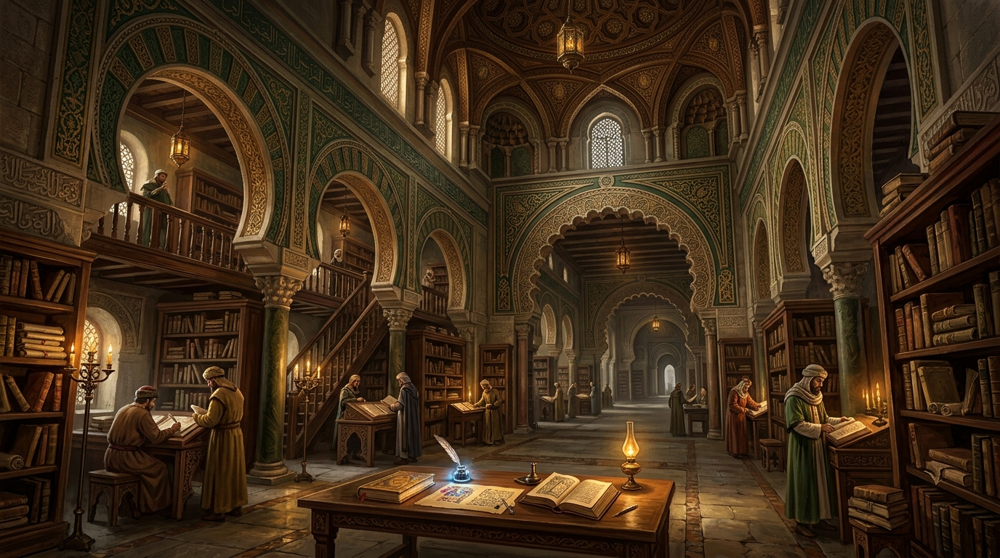

العلم والمعرفة
استكشاف مناهج البحث، والتصنيف التاريخي للعلوم، والتكامل بين البرهان والملاحظة والتجربة العلمية.
💡 الركائز الثلاث الأساسية للمسار
التمييز بين البرهان والملاحظة وسند النقل
لكل حقل معرفي منهجه الخاص: الصرامة الرياضية، الفحص التجريبي بالملاحظة، أو النقد السندي في الأخبار.
استيعاب التصانيف التاريخية للعلوم الإنسانية والطبيعية
أسست كتب كـ «إحصاء العلوم» للفارابي للترتيب الموسوعي الشامل للمعرفة وربط النظري بالعملي.
ربط التحصيل العلمي بالمسؤولية الأخلاقية ونفع المجتمع
انطلقت النهضة العلمية من دافع البحث عن الحقيقة الكونية وتطوير الطب والفلك والعمارة لنفع البشرية.
🏛️ المفاهيم الجوهرية والمعالم الفكرية
أهم المفاهيم والأطروحات الفلسفية والمعرفية في هذا المسار :
إحصاء العلوم
الترتيب المنهجي للمعارف اللسانية، المنطقية، الرياضية، الطبيعية، والإلهية.
المنهج التجريبي
اختبار الفرضيات عبر الملاحظة المنظمة والقياس الدقيق في الطب والبصريات والفلك.
الاستقراء والقياس
جناحا الاستدلال العلمي بين تتبع الجزئيات لاستخراج القوانين والتطبيق المنطقي.
📚 الدراسات والبحوث المرجعية

المنهج العلمي وعصر الازدهار المعرفي في الحضارة الإسلامية
كيف قادت الملاحظة التجريبية والصرامة المنطقية إلى ثورة في الطب والفلك والرياضيات والبصريات.
قراءة الدراسة ←
درر الحكماء في فضل طلب العلم وشرف المعرفة
مختارات من أقوال ابن سينا والفارابي وابن رشد في شرف العقل وقيمة الاكتشاف العلمي.
قراءة الدراسة ←👥 أعلام ورواد المسار
أبو نصر الفارابي
مدون إحصاء العلومرائد التصنيف المنهجي للعلوم وصاحب «إحصاء العلوم» الذي مهد لبناء الموسوعات المعرفية العالمية.
ابن سينا
أمير الأطباء والعلماءألف «القانون في الطب» الذي ظل المرجع الأول للجامعات في الشرق والغرب لأكثر من خمسة قرون.
ابن رشد
طبيب وفيلسوف البرهانجمع بين الفقه والقضاء والطب في كتابه «الكليات في الطب»، ودافع عن الملاحظة السريرية المنتظمة.